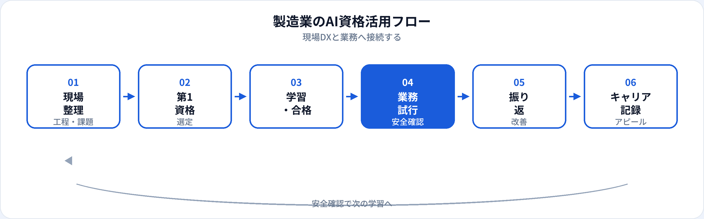

製造業ではスマートファクトリー・IoT・画像検査・予知保全など、AI活用が現場に入り込みつつあります。一方、図面・配合・品質データは営業秘密に該当しやすく、生成AIの使い方にも現場ならではの線引きが必要です。本記事では、製造業で働く方が取るべきAI資格を工程・部門別・職種別に整理し、2026年6月時点で安全な活かし方とキャリアまで解説します。AIエンジニアへの転職は別記事、金融業界向けは別記事、3資格比較は初心者向け比較も参照してください。
製造業にAI資格が効く理由
製造現場は「正確な判断」と「再現性」が生命線です。AI資格は、現場で増えるAIツールを安全な運用ルールのもとで使うための共通言語になります。
現場DX・スマートファクトリー
IoTデータ・画像検査・異常検知の導入会議で、用語と限界を理解し、ベンダー提案を評価できる。
手順書・報告業務の効率化
作業標準・異常対応フロー・日報・改善報告の文案・構成案を速く作り、現場確認に時間を割ける。
現場知識との掛け算
品質・保全・生産管理の経験とAIリテラシーを組み合わせ、社内DX推進や転職の差別化になる。
試験対策はこちら
工程・部門別の活かし方
| 工程・部門 | AI資格の主な役割 | 試行しやすい業務（例） | 第1候補 |
|---|---|---|---|
| 生産・製造 | 日報・引継ぎ・改善報告の文案 | 異常対応メモ、班内連絡文案 | 生成AIパスポート |
| 品質保証（QA） | 不具合報告の構成案、教育資料 | 過去事例の説明文案（匿名化） | 生成AIパスポート |
| 設備保全 | 保全手順書・点検記録の整理 | 故障対応フローのたたき台 | 生成AIパスポート → G検定（予知保全） |
| 生産技術・IE | 工程改善提案、試作報告文案 | 改善アイデアの整理、会議資料骨子 | 生成AIパスポート |
| 研究開発 | 実験メモ整理、文献要約の支援 | 公開論文ベースの調査（社内ルール順守） | 生成AIパスポート → G検定 |
| 調達・物流 | サプライヤー連絡文案、在庫報告 | 問合せ回答案、手順書更新 | 生成AIパスポート |
外観検査AI・異常検知モデルの開発・評価自体は、資格学習後の実装スキル（またはベンダー連携）が必要です。
職種別の第1候補
| 職種・役割 | 第1候補 | 第二候補（任意） |
|---|---|---|
| 現場リーダー・班長 | 生成AIパスポート | —（チーム展開が中心） |
| 品質・生産管理 | 生成AIパスポート | DS検定リテラシー |
| 保全・設備エンジニア | 生成AIパスポート → G検定 | ITパスポート |
| 生産技術・プロセスエンジニア | 生成AIパスポート | G検定 |
| DX推進・情シス | 生成AIパスポート → ITパスポート | G検定 |
| 企画・経営企画 | 生成AIパスポート | 企画向け記事 |
| 管理職 | 生成AIパスポート | 管理職向け記事 |
おすすめ資格の比較
| 資格 | 製造業との相性 | 学習時間目安 | 向いている担当 |
|---|---|---|---|
| 生成AIパスポート | ◎ 文案・情報管理に直結 | 20〜40時間 | 現場・品質・生産・事務全般 |
| G検定 | ○ 画像検査・異常検知・予知保全 | 80〜150時間 | 保全・生技・R&D・DX推進 |
| ITパスポート | ○ IoT・MES・クラウド基礎 | 40〜80時間 | 情シス、デジタル推進、システム連携 |
| DS検定（リテラシー） | ○ 分析ダッシュボードの読み方 | 40〜80時間 | 生産管理、品質分析、SCM |
第1候補と学習順
-
第1：生成AIパスポート（基本）
製造現場の第一候補。手順書・報告・研修資料の文案と、情報管理・安全運用の土台づくり。
-
第2（AI案件担当）：G検定
外観検査・異常検知・予知保全。製造ドメインと組み合わせてAIエンジニア転職にも活きる。
-
第2（IoT・システム）：ITパスポート
MES・IoTプラットフォーム・クラウド連携が多いDX推進担当向け。
製造業の活用フロー

製造では学習→業務試行→安全確認→振り返りのサイクルが重要です。品質・保全・情シスとの確認を挟むことが、他業界より現場感が強いポイントです。
業務別：安全な活用シーン
| 業務 | 生成AIの使い方（例） | 入力してはいけない例 |
|---|---|---|
| 作業標準・手順書 | 構成案、説明文のたたき台（公開情報ベース） | 未公開の配合・工程条件 |
| 異常・不具合報告 | 報告書の章立て、説明文案（匿名化後） | 顧客名・ロット番号・図面 |
| 改善・QC活動 | なぜなぜ分析の整理、発表資料骨子 | 未公開の不良率・原価データ |
| 保全・点検 | 点検手順の文案、教育資料 | 設備の固有設定・セキュリティ情報 |
| 社内研修 | 問題文・解説文案、FAQ更新案 | 実在の製品・顧客事例データ |
品質判定・設備停止判断・安全関連の最終決定はAIに委ねません。資格はリテラシーと運用ルールの整理が目的です。
合格後の実践
1か月目
社内AI利用ルール・承認済みツールを確認。資格で学んだ情報管理と照合。品質・情シスに相談。
2か月目
低リスク業務1つ（手順書文案、日報テンプレ等）で試行。必ず現場リーダーが最終確認。
3か月目以降
成果を記録（作成時間短縮、教育効率化等）。第二候補（G検定等）の要否を役割に応じて判断。
製造現場の注意点
| やってよいこと | 避けるべきこと |
|---|---|
| 社内承認済みツールの利用 | 個人の無料AIに図面・配合データを入力 |
| 匿名化した文案・構成案の生成 | 未公開の品質・原価・顧客仕様の入力 |
| 品質・保全・情シスへの事前確認 | AI出力をそのまま作業指示・判定に使用 |
| 現場リーダーによる最終確認 | 安全・品質規定を「資格があるから」無視 |
キャリア・転職でのアピール
社内評価・DX推進
例：「生成AIパスポート（2026年○月）取得。品質部門向け不具合報告テンプレ整備で作成時間30%短縮。」
製造では資格＋現場知識＋改善実績のセットが説得力を生みます。記載例は履歴書ガイドを参照。
AIエンジニア・データ職へのキャリアチェンジ
製造ドメイン＋G検定＋ポートフォリオの組み合わせは強み。製造×AIエンジニア転職記事、AIエンジニアも併読。
他業界から製造へ
AIリテラシーは補完になります。製造の業界知識はOJT・資格（品質管理検定等）で別途積み上げる必要があります。
資格だけでは足りない点
製造現場の評価は品質・安全・納期・コストです。資格はリテラシーと学習意欲の証明になりますが、設備操作・品質判断・現場の暗黙知は現場で培う領域です。合格後は、品質・保全と連携しながら小さく試すことを優先してください。
よくある質問
製造業におすすめのAI資格はどれ？
多くの現場では生成AIパスポートが第一候補。画像検査・異常検知担当はG検定、IoT連携はITパスポートも検討。
現場作業員・技術者でも取る価値はある？
あります。安全な使い方と用語整理に直結。班長・リーダーが先に取得しチーム展開する進め方も有効。
設計図面や品質データをAIに入力してよい？
原則入力しない。図面・配合・不良率は営業秘密。匿名化した文案生成に限定。
G検定は製造業で必要？
必須ではない。現場・品質・生産管理なら生成AIパスポートで十分なことが多い。外観検査・予知保全の開発担当はG検定の価値が上がる。